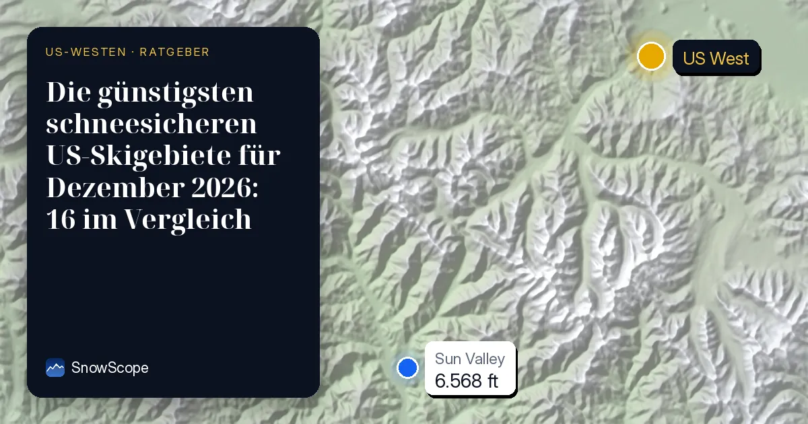
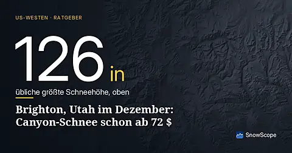

Die günstigsten schneesicheren US-Skigebiete für Dezember 2026: 16 im Vergleich
Schnee im frühen Dezember ist fast überall in den USA ein Glücksspiel, doch die Chancen steigen gegen Monatsende deutlich. Wir haben 16 Budget-Skigebiete nach ihrer echten Dezember-Bilanz gereiht – dem Anteil der letzten 46 Winter mit mindestens 50 cm auf Mittelhöhe am 15. Dezember – und jedem den aktuellen Tagesskipass-Preis für Erwachsene gegenübergestellt.
Die Live-Schneeprognose für US West in der SnowScope-AppSchneehöhen, Pulverschnee-Alarme und 3D-Karte, gratis.
Welche Gebiete haben die besten Dezember-Chancen
Grand Targhee (Wyoming) ist der klare Favorit: In jedem der letzten 46 Winter lagen dort am 15. Dezember mindestens 50 cm auf Mittelhöhe. Mt. Baker (Washington) folgt mit 93 %, dann Brighton (Utah) mit 89 %. Sechs Gebiete liegen gleichauf bei 87 %: White Pass und Snow King (beide Mountain States), Brundage und Lookout Pass (Idaho), plus Montana Snowbowl und Schweitzer (auch Idaho).
Die zweite Hälfte: Timberline (Oregon) mit 78 %, Wolf Creek (Colorado) mit 72 %, Ski Cooper (Colorado) mit 70 %, Loveland (Colorado) mit 67 %, Beaver Mountain (Utah) mit 57 % und Bridger Bowl (Montana) mit 50 %.

Fünf Gebiete, die Preis und Zuverlässigkeit verbinden
Wenn du Chancen über 80 % und einen Tagesskipass unter $80 willst, passen fünf Resorts. Brundage hat 87 % Chancen und kostet $65 an ausgewählten Tagen (Preise steigen näher zum Besuchsdatum). White Pass liegt auch bei 87 % und beginnt bei $69 online Mo–Do außerhalb von Feiertagen. Lookout Pass erreicht 85 % Chancen und kostet $63, wenn du einen Wochentag im Voraus buchst.
Brightons 89 % Chancen kommen mit einem Startpreis von $72 bei Frühbuchung. Montana Snowbowl teilt sich mit Brundage 87 % Chancen und kostet $78 an Wochentagen. Der Schlüssel bei allen fünf: Montag bis Donnerstag wählen und so früh wie möglich buchen, wenn Termine freigegeben werden.
Die zuverlässigsten Optionen kosten mehr
Grand Targhees 100 %-Dezember-Bilanz ist nicht günstig. Online-Tickets dort kosten $125 bis $180 je nach Datum. Mt. Baker mit 93 % Chancen verkauft Tageskarten nur am Schalter: $98,80 an schwachen Tagen (Mo–Do außerhalb Feiertagen) und $115,42 an starken Tagen, beide Preise ohne Steuern.
Snow King (Wyoming) beginnt bei $100 und liefert 87 % Chancen. Timberline bietet Flexibilität: Ganztag außerhalb Spitzenzeiten $129 oder Nachmittagskarte (ab 12 Uhr) $96. Schweitzers 3er-Pack mit drei Tagen für $249 kostet $83 pro Tag.
Tiefe Rabatte kommen mit weniger Sicherheit im frühen Monat
Die niedrigsten Ticketpreise gehören Gebieten, wo Schnee Mitte Dezember nicht garantiert ist. Ski Cooper kostet nur $49 an Wochentagen (87 % Chancen auf Wochentag-zu-Wochenende aufgeteilt, aber nur 70 % Chancen am 15. Dezember selbst). Loveland verkauft $60-Tickets online bis 13. Dezember, dann springe auf $159. Sunlight beginnt bei $74, Beaver Mountain kostet pauschal $75, Bridger Bowl $86 online und Wolf Creek $96 an regulären Tagen.
Diese Gebiete werden viel sicherer, je später im Dezember. Die Schneewahrscheinlichkeit steigt von Woche zu Woche: Ab 21.–27. Dezember erreicht Ski Cooper 96 % Chancen, Bridger Bowl 78 % und Beaver Mountain 76 %. Wenn du deine Termine verschieben kannst, lohnt sich das Warten bis zur dritten Woche: günstige Preise und viel bessere Schneeaussichten.
Was die Zahlen bedeuten
Diese Prozentsätze erfassen 46 Winter von 1980–81 bis 2025–26. Sie beantworten eine Frage: Wie oft hatte jedes Resort bis 15. Dezember 50 cm oder mehr auf Mittelhöhe? Eine typische Mittelhöhen-Tiefe an diesem Datum reicht von 51 cm bei Bridger Bowl bis 118 cm bei Grand Targhee und 132 cm bei Timberline.
Preise wurden am 13. November 2026 auf den offiziellen Resort-Seiten überprüft. Dynamische Preisgestaltung bedeutet, dass die ‚ab'-Preise steigen, wenn Termine ausverkauft werden. Früher Schnee ist dünn und kann Steine verbergen; schau dir die Schneebedeckung wenige Tage vor deiner Fahrt an.
So findest du das beste Angebot für deine Termine
Wenn du in der zweiten oder dritten Dezemberwoche fahren kannst, wähle Montag bis Donnerstag und buche online, sobald die Termine freigegeben werden. Du vermeidest den Wochenend-Aufschlag und die Peak-Holiday-Phase, und die Geschichte zeigt gute Chancen bei den meisten dieser Gebiete. Zum Beispiel: Ski Cooper bei 70 % Chancen am 15. Dezember springt auf 93 % für die Woche 14.–20. Dezember und 96 % für 21.–27. Dezember.
Wenn Anfang Dezember dein einziges Zeitfenster ist, bleib bei der oberen Hälfte der Rangliste. Grand Targhee, Mt. Baker und Brighton bleiben alle über 85 % Chancen ab 1. Dezember. Mitbringen: Geduld, Bedingungen vor der Fahrt checken und merken: Der Kalender ist dein günstigstes Ticket.
Tipps für Skifahrer
- Buche eine Wochentag-Reise in der zweiten oder dritten Dezemberwoche: Schneeaussichten sind gut, Wochenendpreise fallen weg und du vermeidest den Peak-Holiday-Aufschlag.
- Nutze die dynamische Preisgestaltung zu deinem Vorteil: Wenn ein Resort einen ‚ab'-Preis veröffentlicht, buche, sobald der Kalender freigegeben wird; Preise steigen nur.
- Wenn du Anfang Dezember fahren musst, wähle Resorts aus der oberen Hälfte der Rangliste (über 85 % Chancen): Grand Targhee, Mt. Baker, Brighton, White Pass, Snow King, Brundage, Lookout Pass und Schweitzer.
- Später Dezember ist sicherer für Budget-Gebiete in der unteren Hälfte. Ab Weihnachtswoche erreichen Ski Cooper, Bridger Bowl und Beaver Mountain alle 76–96 % Chancen; schau dir die Schneebedeckung wenige Tage vor deiner Fahrt an.
- Schau dir das offizielle Lawinenbulletin vor dem Fahren außerhalb gesicherter Bereiche an.
Zu diesen Zahlen
Die Schneehöhen der Skigebiete sind der meiste Schnee in den oberen Hängen am angegebenen Tag; es sind Schätzungen für eine Fläche, keine Messung an einem Punkt. Prognosen können sich ändern. Lies vor dem Freeriden immer den offiziellen Lawinenlagebericht.
Diesen Bericht zitieren
Für Forschung, Lehre oder Presse: Zahlen und Grafiken sind unter CC BY 4.0 mit dieser Quellenangabe frei nutzbar.
SnowScope (2026), Die günstigsten schneesicheren US-Skigebiete für Dezember 2026: 16 im Vergleich, https://snowscope.app/blog/de/2026/11/cheapest-snow-sure-us-ski-areas-december-2026.html, abgerufen am 2026-11-14
SnowScope (Atlas Labs). (2026, November 14). Die günstigsten schneesicheren US-Skigebiete für Dezember 2026: 16 im Vergleich. SnowScope snow reports. https://snowscope.app/blog/de/2026/11/cheapest-snow-sure-us-ski-areas-december-2026.html
BibTeX
@misc{snowscope2026cheapestsnowsureusskiare,
author = {{SnowScope (Atlas Labs)}},
title = {Die günstigsten schneesicheren US-Skigebiete für Dezember 2026: 16 im Vergleich},
year = {2026},
month = nov,
howpublished = {\url{https://snowscope.app/blog/de/2026/11/cheapest-snow-sure-us-ski-areas-december-2026.html}},
note = {Published 2026-11-14 14:47 UTC; accessed 2026-11-14}
}· CC BY 4.0 · Methoden, Daten und Werkzeuge →
US West folgen
Gratis: eine Nachricht, wenn Neuschnee kommt, und jeden Morgen die Vorhersage.
Weitere Schneeberichte

Brightons mittlere Höhenlage hält typisch 94 cm am 15. Dezember. Datenstand 13. November 2026.

Sunlight nahe Glenwood Springs ist im Dezember ein Glücksspiel in der Frühsaison. Mitte Dezember kannst du mit 67 cm in der Mittelhöhe rechnen, wobei aber nur 72% der Winter diese Tiefe erreichen.

Bridger Bowl verlangt 86 $ online für 2026/27. Mittelhang hat am 15. Dezember in der Hälfte der Winter 50 cm; in der Weihnachtswoche steigen die Chancen auf 78 %.